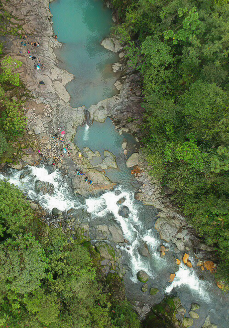
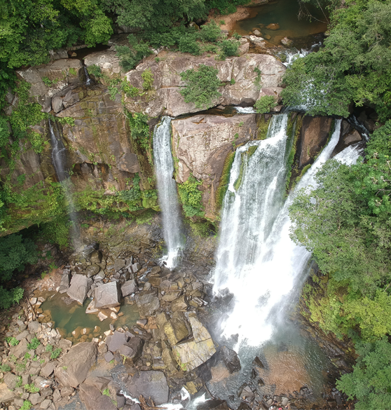
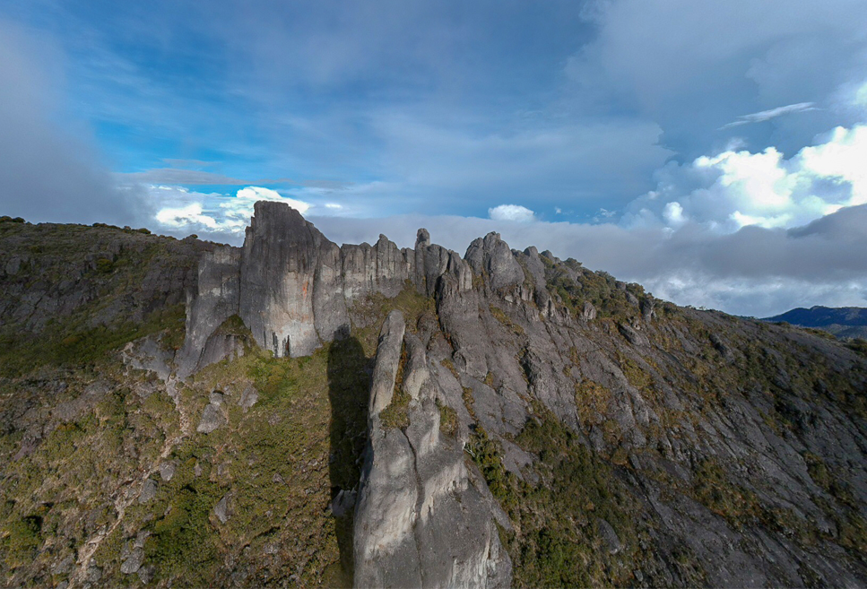
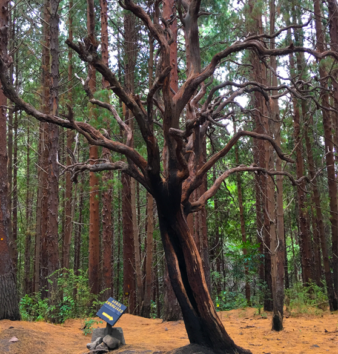
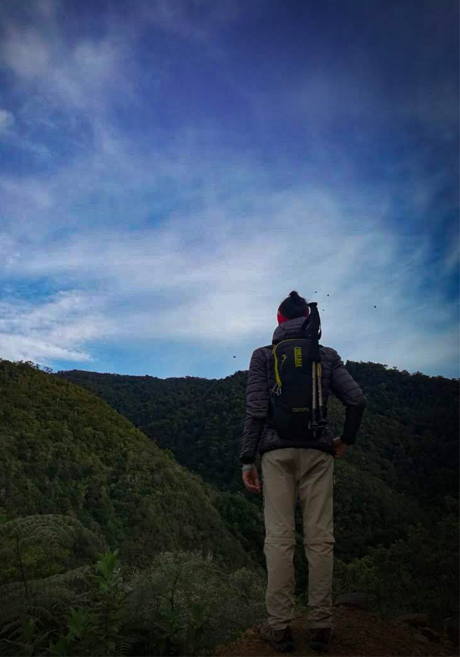
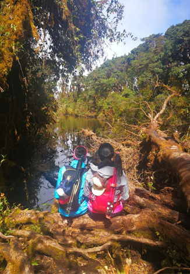
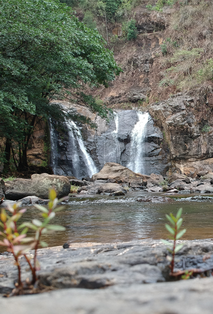

Copyright © All rights reserved | Travel and Hike is made with by JLam
“In photography there is a reality so subtle that it becomes more real than reality.”

Reality


Photography


Hope


Future
